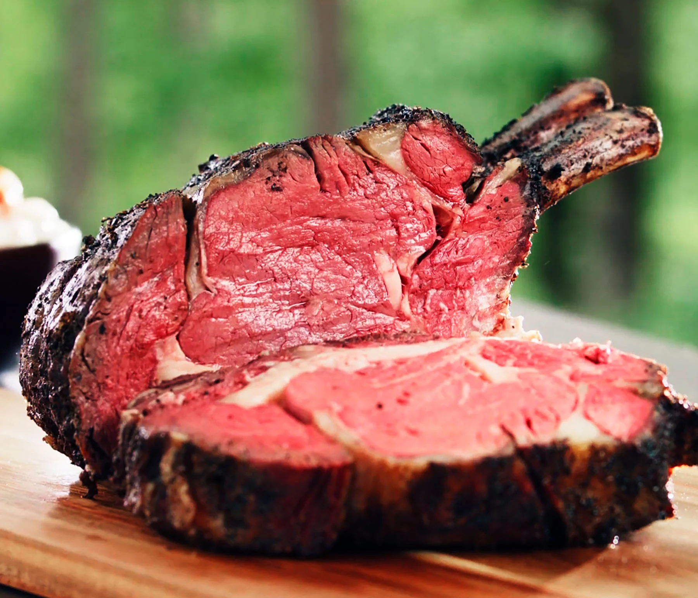

Prime ribs

Why should you try it
Savor the perfection of our Prime Ribs—a culinary masterpiece crafted from the finest cuts of beef. Expertly seasoned and slow-roasted, each slice boasts a melt-in-your-mouth tenderness and a flavorful, herb-infused crust. Whether celebrating a special occasion or craving gourmet indulgence, our Prime Ribs promise an extraordinary dining experience, delivering the epitome of beef perfection in every savory bite.
Ingredients
- 4 to 5 pounds prime rib roast
- Salt and pepper to taste
- Garlic powder
- Onion powder
- Dried thyme
- Dried rosemary
- Olive oil
Preheat the Oven:
Preheat your oven to 450°F (230°C).Prepare the Prime Rib:
- Place the prime rib in a roasting pan with the fat side up.
- Rub the surface with olive oil, ensuring even coverage.
Seasoning:
Generously season the prime rib with salt, pepper, garlic powder, onion powder, dried thyme, and dried rosemary. Adjust quantities based on personal taste preferences.Roasting:
- Place the roasting pan in the preheated oven for 15 minutes to sear the meat.
- After searing, reduce the oven temperature to 325°F (160°C).
- Continue roasting until the internal temperature reaches your desired level of doneness. Use a meat thermometer for accuracy (about 20 minutes per pound for medium-rare).
Resting:
Allow the prime rib to rest for at least 15-20 minutes before carving. This helps retain juices and ensures a moist and flavorful result.Carving:
Carve and serve the prime rib, enjoying the succulent and well-seasoned meat.
Home page